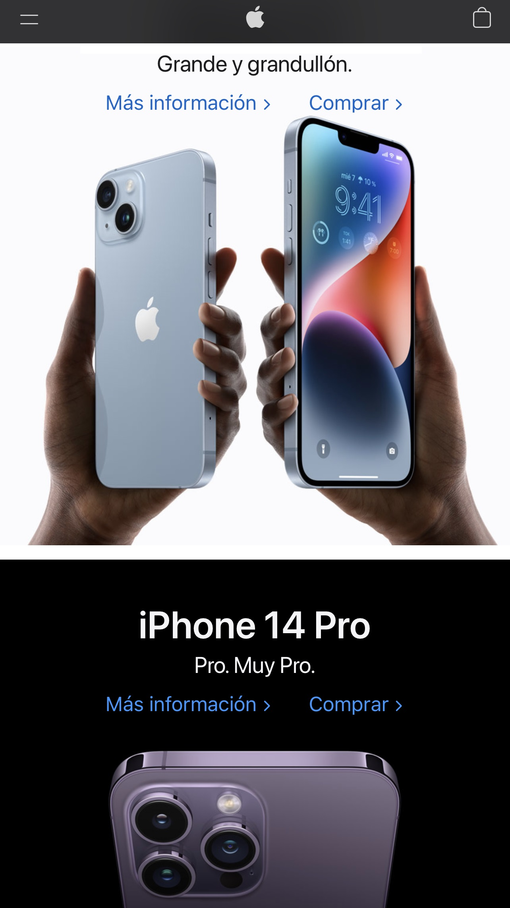

Visual hierarchy
Church of JesusChrist Website
churchofjesuschrist.org
The church of Jesus Christ of latter-day saints’ website makes a great work in showing its purpose. This purpose is achieved at making it visual understable with its hierarchy. We can find the name of the church, at the top-left of the website we can find a big picture of Jesus Christ. the first part watched is the top-left, so the attention is brought to Jesus Christ. Then we have some pictures and as we are getting far from the first one, every picture left is getting small. So, this web makes a good job with visual hierarchy.
contrast
Apple
apple.com
The apple website is very interesting to learn design. At the beginning of the web we can see the navigation bar showing us the entire catalog of Apple products followed by a minimalist design with the news in its most recent products. Something that also stands out is contrast and how this helps make the page visually appealing to the customer. Use black and white to create contrast in your ad for the new iPhone. In this way the information is perfectly differentiated to make it easier to understand and read.
Alignment
Twitch
twitch.tv
The twitch website does a great job with alignment. The design of the twitch page is similar to that of youtube or amazon. The content of the page is not always the same since it consists of streaming and every time the page loads again it will show different streaming and videos. This type of page can be confusing and chaotic due to the large amount of content it displays. And since the profits of the page consist of the content you consume, they must do a good job of lining up so that it is visually understood and well visualized.